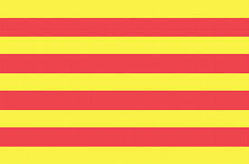
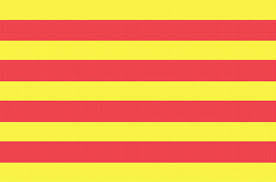

Le concept
"Et si on ouvrait les yeux et qu'on arrêtait de voyager comme des valises enfermées dans un coffre? Tu t'es déjà demandé tous ce que tu perdais en ne t'écartant pas de ta route? Ce que tu pourrais gagner en "perdant" une demie heure? Et bien ce site est fait pour toi! Introduis ton point de départ, ton point d'arrivée, le nombre d'arrêts que tu es prêt à faire et tes centres d'intéret (sites naturels, musées, villages classés, ...) et découvre comment ne plus passer à côté de ce qui t'entoure"
Les données Participe!Tu veux proposer un site que tu aimerais partager pour les gens découvrent en passant? Contacte-nous en remplissant ce formulaire: